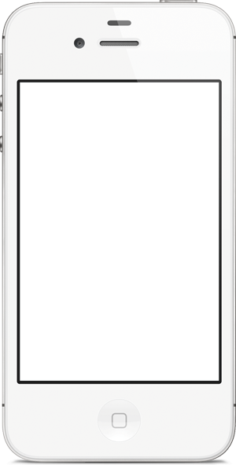

AppScroll
A beautiful app showcase.
Showcase your app screens and features on an unforgettable scrolling website. Easily customizable and programmable.



Showcase your app screens and features on an unforgettable scrolling website. Easily customizable and programmable.
Beautiful images and text next to a scrolling mobile phone mean you can showcase your app in more than one way. Hilight a feature on the left, and show the corresponding app screens on the right. Simple!
SecondMenu gives you a new and amazing way to spread your menu items and your restaurant virally.
SecondMenu gives you a new and amazing way to spread your menu items and your restaurant virally.
SecondMenu gives you a new and amazing way to spread your menu items and your restaurant virally.